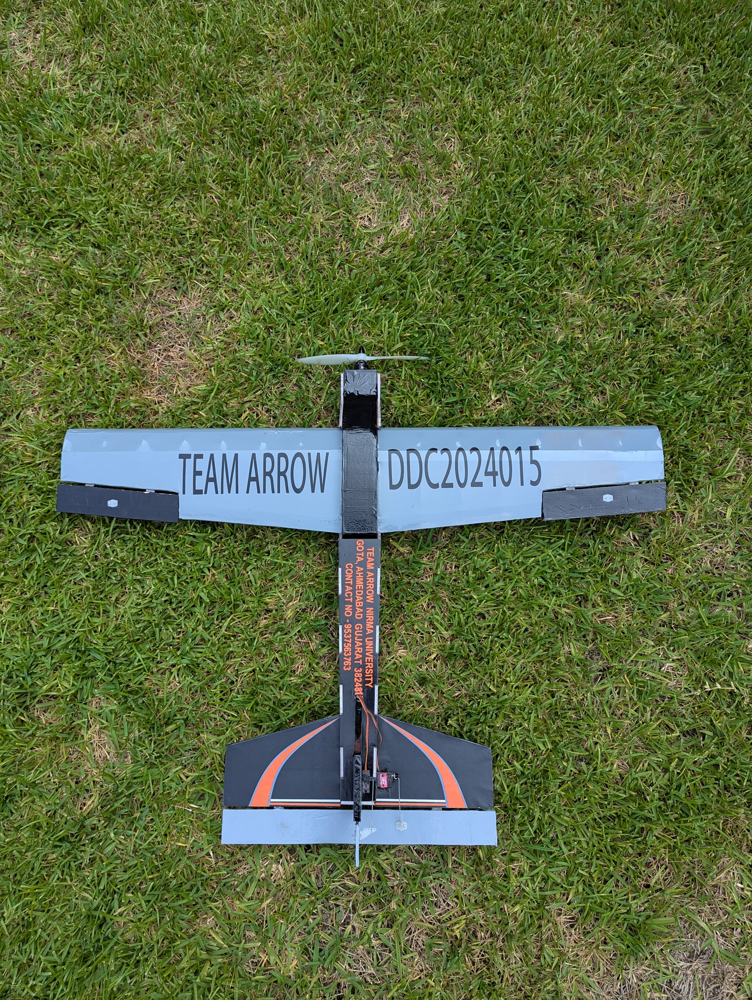

Drone Design Challenge — Micro Class
Design lead for Team Arrow across DDC Micro Class entries (2023–2025). Focus: high payload fraction, lightweight structures, repeatable manufacturing and robust flight performance under competition constraints.
About DDC — Micro Class
The Drone Design Challenge (DDC) Micro Class emphasises compact, high-payload-fraction UAVs. Teams must design-to-weight and demonstrate mission capability within strict dimensional and mass limits — a great platform to apply aerodynamics, structures and systems engineering in a competition environment.
Year-wise Highlights
2024 — Design Philosophy & Innovation
Team Arrow focused on a high-payload fraction design balancing lightweight construction and aerodynamic efficiency. Key choices included a trailing-edge tapered wing (~1 m span), and a three-walled fuselage built from aeroply and flite board for superior strength-to-weight and impact resistance.
Achievements
- Overall 2nd Place — DDC Micro Class 2024
- Best Technical Presentation
Performance & Optimization
Through iterative testing we reduced empty weight from ~1000 g to <700 g, achieving a payload fraction ≈ 0.72. A simplified fuselage improved manufacturability and repairability between flights, enabling more test iterations and a more data-driven tuning cycle.
2023 — Stability & Structural Efficiency
The 2023 entry emphasized stability and robustness. We used a cranked-dihedral wing planform for improved roll stability and a squared semi-monocoque fuselage for impact resistance. XPS foam under the belly increased survivability for rough landings.
Achievements
- Overall 2nd Place — DDC Micro Class 2023
- Best Design Report
Design Improvements
Upgrades included moving from a slotted wing lock to a wing-nut assembly for quicker swaps and using aeroply shear webs to replace heavier aluminum rods, reducing weight while keeping stiffness.
Media & Flight Highlights
Below are flight highlights, test videos and gallery images. Videos are muted by default — unmute while playing if needed.



Tip: swap the placeholder filenames for your final media files in `images/` and `videos/`.
Design & Manufacturing Notes
- Wing: trailing-edge taper for efficient lift distribution and reduced balsa usage.